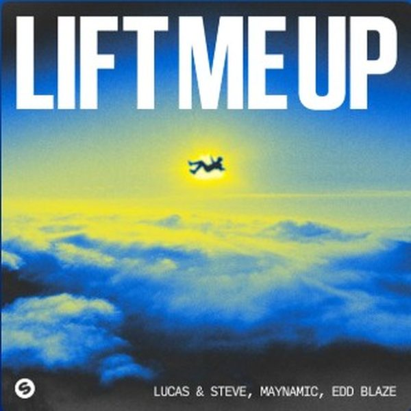
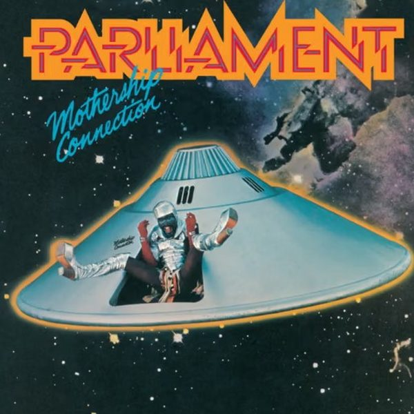

I 18 dischi e le top 6
 1
Give Me DesireAlex Mills, ESSEL
1
Give Me DesireAlex Mills, ESSEL
 2
DuroFederico Scavo, CHRSTPHR
2
DuroFederico Scavo, CHRSTPHR
 3
Good GirlsMatroda
3
Good GirlsMatroda

4 Lift Me UpLucas & Steve x Maynamic x Edd Blaze 5
Feelings for YouKlingande x Shaun Farrugia
5
Feelings for YouKlingande x Shaun Farrugia
 6
Don't Let GoNicky Romero, Monocule, WHAT EVA
6
Don't Let GoNicky Romero, Monocule, WHAT EVA
 7
InsanityMOGUAI, DJs From Mars, ALEX LNDN
7
InsanityMOGUAI, DJs From Mars, ALEX LNDN
 8
Move It DownSICK INDIVIDUALS
8
Move It DownSICK INDIVIDUALS
 9
Mic DropSikdope, The Melody Men
9
Mic DropSikdope, The Melody Men
 10
Sound the AlarmJUNTARO, Luxo
10
Sound the AlarmJUNTARO, Luxo
 11
LuminousJOSAAN
11
LuminousJOSAAN
 12
KatamaSowel
12
KatamaSowel

13 Give Up the FunkN2N & James Patterson 14
MIND MADE UPPAJANE
14
MIND MADE UPPAJANE
 15
Soundtracks and HeaterGoldFish, Samim and Tube & Berger
15
Soundtracks and HeaterGoldFish, Samim and Tube & Berger
 16
Dark SideQubiko
16
Dark SideQubiko
 17
We Come OneAD-1, Dim Chord feat. DJ Kas
17
We Come OneAD-1, Dim Chord feat. DJ Kas
 18
SurrenderAudiojack
18
SurrenderAudiojack
La tracklist
- 1 Give Me Desire Alex Mills, ESSEL Toolroom Records
- 2 Duro Federico Scavo, CHRSTPHR Cr2 Records
- 3 Good Girls Matroda Terminal Underground
- 4 Lift Me Up Lucas & Steve x Maynamic x Edd Blaze Spinnin' Records
- 5 Feelings for You Klingande x Shaun Farrugia Ego
- 6 Don't Let Go Nicky Romero, Monocule, WHAT EVA Protocol Recordings
- 7 Insanity MOGUAI, DJs From Mars, ALEX LNDN Smash The House
- 8 Move It Down SICK INDIVIDUALS Revealed Recordings
- 9 Mic Drop Sikdope, The Melody Men Dim Mak Records
- 10 Sound the Alarm JUNTARO, Luxo WIN WIN Situation
- 11 Luminous JOSAAN Adesso Music
- 12 Katama Sowel Arcadia Music
- 13 Give Up the Funk N2N & James Patterson n2n
- 14 MIND MADE UP PAJANE Hexagon
- 15 Soundtracks and Heater GoldFish, SamimandTube & Berger Armada Music
- 16 Dark Side Qubiko Toolroom Records
- 17 We Come One AD-1, Dim Chord feat. DJ Kas Cavo Paradiso Records
- 18 Surrender Audiojack Toolroom Records